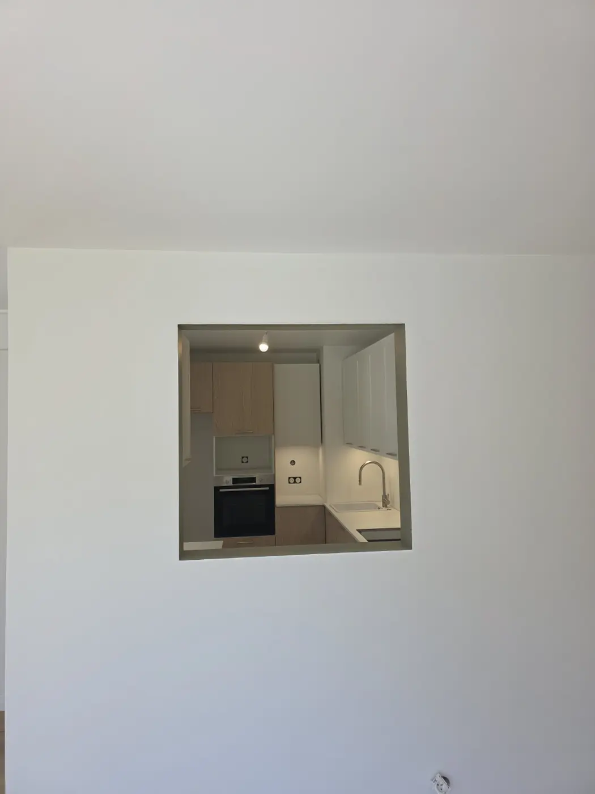
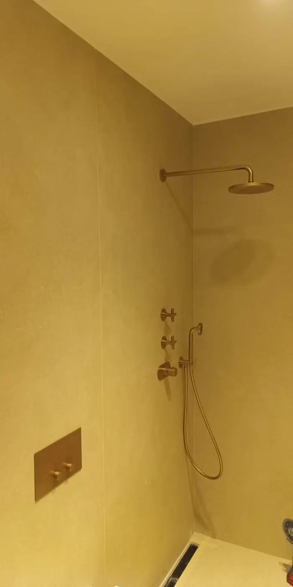
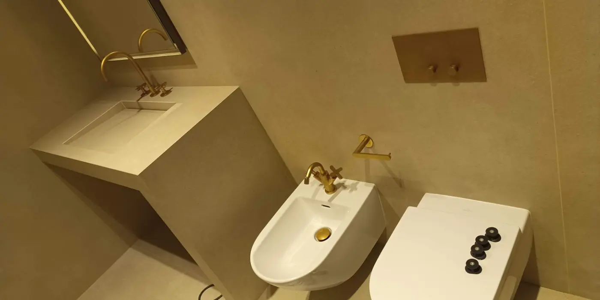
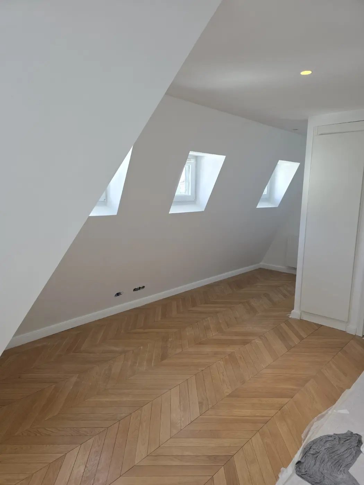
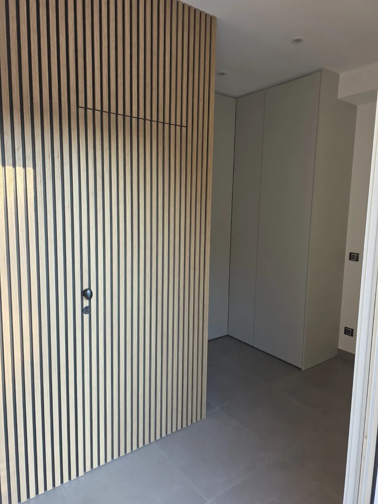
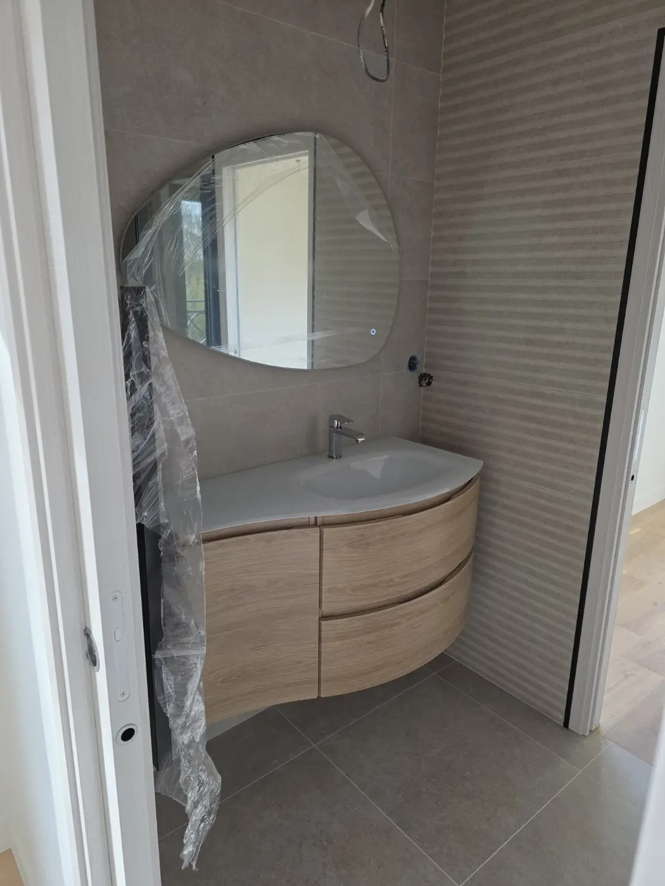
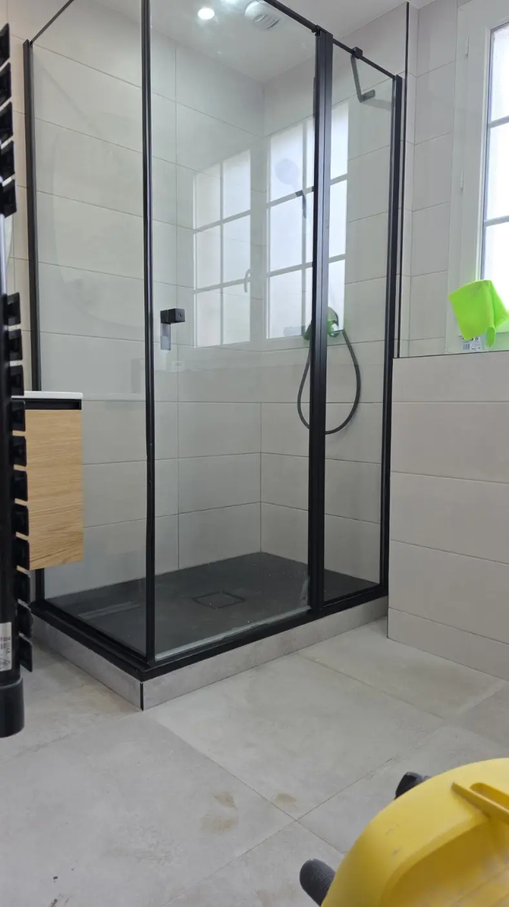

Paris 16e
Petite cuisine vue à travers l’ouverture
Un espace compact dont l’aménagement se découvre depuis la pièce voisine. Une vue simple et fidèle du projet.
Une sélection de projets menés avec soin : montage, ajustements, pose et finitions pour des intérieurs durables et cohérents.

Un espace compact dont l’aménagement se découvre depuis la pièce voisine. Une vue simple et fidèle du projet.


Installation et réglage des équipements apparents, avec une attention particulière portée aux alignements et à l’harmonie des finitions.

Calepinage soigné, coupes autour des volumes atypiques et finitions de rive pour souligner la géométrie de la pièce.

Pose d’un rythme vertical en bois, raccords continus et intégration discrète de la porte pour un rendu architectural.

Mise en place, réglage et alignement d’un ensemble aux formes courbes, avec finitions autour du carrelage.

Pose et ajustement de la paroi, contrôle des aplombs et réalisation des finitions visibles pour une ligne contemporaine.
Envoyez quelques photos, votre ville et les dimensions utiles. La faisabilité et le tarif seront confirmés avant l’intervention.